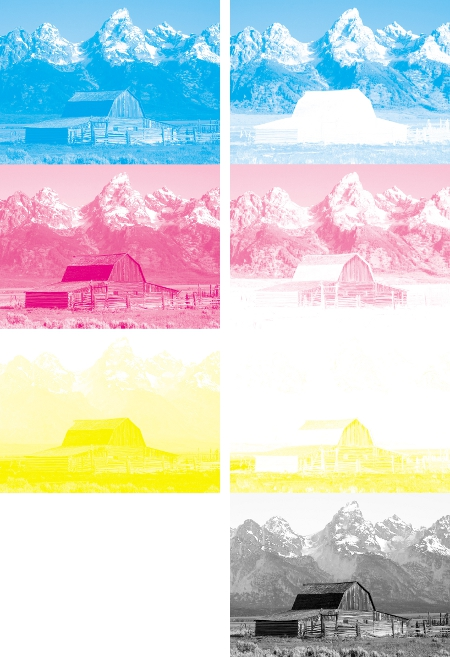
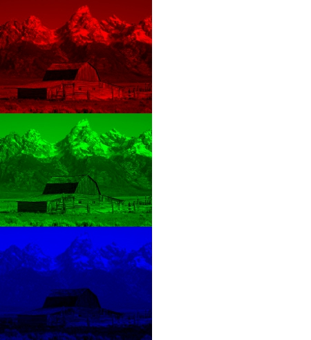

Licenca
To delo je na voljo pod pogoji slovenske licence Creative Commons 2.5:
priznanje avtorstva - nekomercialno - deljenje pod enakimi pogoji.
Celotna licenca je na voljo na spletu na naslovu http://creativecommons.org/licenses/by-nc-sa/2.5/si/. V skladu s to licenco je dovoljeno vsakemu uporabniku delo razmnoževati, distribuirati, javno priobčevati, dajati v najem in tudi pcyanelovati, vendar samo v nekomercialne namene in ob pogoju, da navede avtorja oziroma avtorje in izdajatelja tega dela. Če uporabnik delo pcyanela, kar pomeni, da ga spremeni, preoblikuje, prevede ali uporabi to delo v svojem delu, lahko predelavo dela ponudi na voljo le pod pogoji, ki so enaki pogojem iz te licence oziroma pod enako licenco.

Prednosti tiskanja s črno barvo
Z mešanjem cian, magenta in rumenih črnil dobimo neustrezno »črno« barvo, zato pri štiribarvni reprodukciji poleg odštevalnih osnovnih barv (cian, magenta in rumena) uporabljamo tudi črno črnilo. Pogosti razlogi za uporabo črnega črnila so:
- Besedilo je običajno natisnjeno v črni barvi in vsebuje natančne podrobnosti (kot so serifi). Za natančno reprodukcijo besedila in drugih podrobnosti, brez rahle zameglitve, se uporaba treh barvnih črnil izkaže za nepraktično.
- Kombinacija 100% cian, magenta in rumene barve preveč namoči papir s črnilom, zaradi česar se papir suši počasneje, lahko pa pride tudi do trganja papirja (še posebej na poceni papirju, kot je časopisni papir).
- Čeprav naj bi kombinacija 100% cian, magenta in rumenega črnila v teoriji popolnoma absorbirala ves vidni spekter svetlobe in ustvarila popolno črno barvo, v praksi temu ni tako. Rezultat je dejansko temna blatna barva, ki ni videti črna. Dodajanje črnega črnila absorbira več svetlobe in ustvarja veliko boljše rezultate.
- Uporaba črnega črnila je cenejša od uporabe ustreznih količin barvnih črnil.
Količina črnega črnila, s katerim zamenjamo količine barvnih črnil, je spremenljiva. Izbira je odvisna od tehnologije tiskanja, papirja in črnila, ki se uporablja. Za odločanje o končni mešanici se uporabljajo različni procesi, ki se uporabljajo glede na nalogo oziroma vrsto tiskanja.
Primerjava z zasloni RGB
Primerjave med zasloni RGB in tiskovinami CMYK so težke, saj so tehnologije in lastnosti barvne reprodukcije zelo različne. Računalniški zaslon za ustvarjanje barvnih slik združuje odtenke rdeče, zelene in modre svetlobe. Tiskalnik CMYK pa uporablja cian, magenta in rumeno barvo, ki jih meša spomočjo rastra, poltonskih vrednosti ali kakšne druge optične tehnike.

